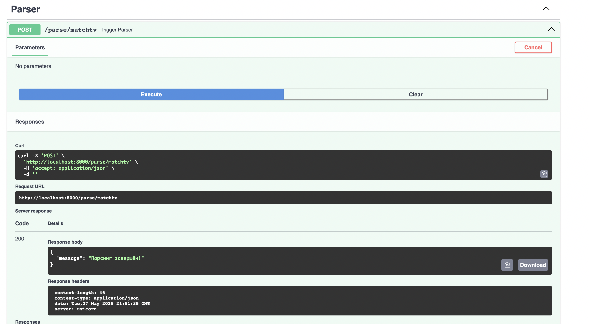
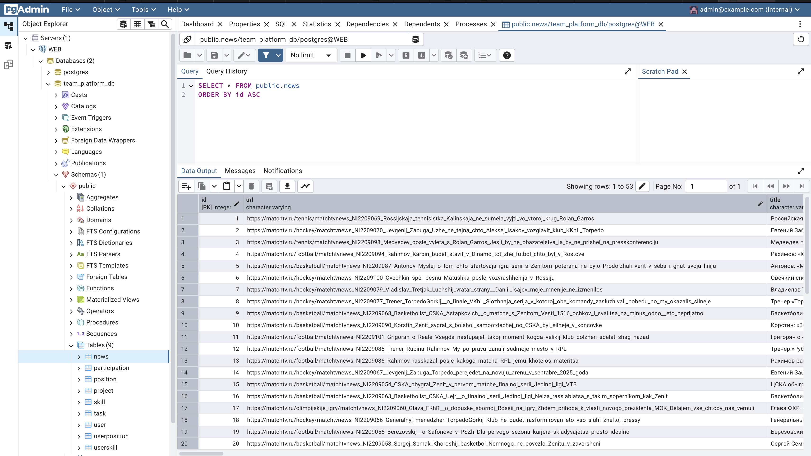
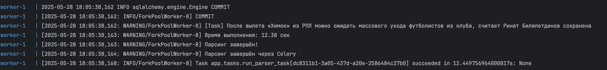
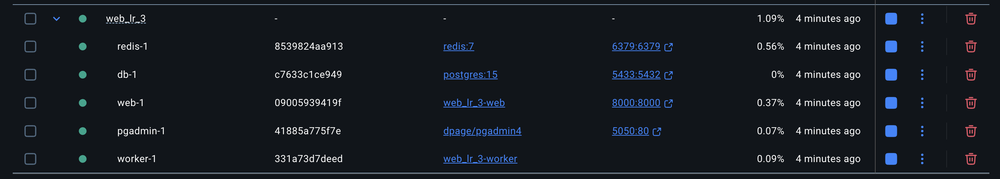

Упаковка FastAPI приложения в Docker, Работа с источниками данных и Очереди
В рамках данного задания были взяты FastAPI приложение (создано в рамках лабораторной работы номер 1), база данных (аналогично создано в рамках лабораторной работы номер 1) и парсера данных (создано в рамках лабораторной работы номер 2)
Сам Docker файл:
FROM python:3.11-slim
WORKDIR /app
COPY requirements.txt .
RUN pip install --no-cache-dir -r requirements.txt
COPY ./app ./app
COPY .env .
EXPOSE 8000
CMD ["uvicorn", "app.main:app", "--host", "0.0.0.0", "--port", "8000"]
Файл docker-compose.yml
version: "3.9"
services:
db:
image: postgres:15
restart: always
environment:
POSTGRES_USER: postgres
POSTGRES_PASSWORD: Masha1226
POSTGRES_DB: team_platform_db
ports:
- "5433:5432"
volumes:
- postgres_data:/var/lib/postgresql/data
web:
build: .
restart: always
depends_on:
- db
ports:
- "8000:8000"
env_file:
- .env
environment:
DB_ADMIN: postgresql+psycopg2://postgres:Masha1226@db:5432/team_platform_db
command: uvicorn app.main:app --host 0.0.0.0 --port 8000
pgadmin:
image: dpage/pgadmin4
restart: always
environment:
PGADMIN_DEFAULT_EMAIL: admin@example.com
PGADMIN_DEFAULT_PASSWORD: admin
ports:
- "5050:80"
depends_on:
- db
volumes:
- pgadmin_data:/var/lib/pgadmin
volumes:
postgres_data:
pgadmin_data:
Прокидываем 3 контейнера: для запуска бд, для инициализации pgadmin и для запуска приложения на FastAPI
Далее реулизуем возможность вызова парсера по http. Для этого прокинем дополнительный эндпоинт
from fastapi import APIRouter
from app.async_parser import run_parser
from app.tasks import run_parser_task
import asyncio
parser_router = APIRouter()
def sync_parser_runner():
asyncio.run(run_parser())
@parser_router.post("/parse/matchtv", tags=['Parser'], status_code=202)
def trigger_parser():
run_parser_task.delay()
return {"message": ""}
Результат:

Ну и подключим все руты в проиложении:
from fastapi import FastAPI
from app.user_endpoints import user_router
from app.team_platform_endpoints import team_platform_router
from app.parser_endpoint import parser_router
from app.connection import init_db
app = FastAPI()
app.include_router(user_router)
app.include_router(team_platform_router)
app.include_router(parser_router)
@app.on_event("startup")
def on_startup():
init_db()
Посмотрим, что происходит на стороне бд:

А теперь подключим Celery + Redis в стек. Нам необходимо: 1. Создать работника
from celery import Celery
celery_app = Celery(
"worker",
broker="redis://redis:6379/0",
backend="redis://redis:6379/0"
)
celery_app.conf.task_routes = {
"app.tasks.run_parser_task": {"queue": "parser"}
}
import app.tasks
- Создать задачу для выполнения
from app.celery_worker import celery_app
from app.async_parser import run_parser
import asyncio
@celery_app.task(name="app.tasks.run_parser_task")
def run_parser_task():
print("Парсинг начат через Celery")
asyncio.run(run_parser())
print("Парсинг завершён через Celery")
- Добавить эндпоинт для вызова
parser_router = APIRouter()
def sync_parser_runner():
asyncio.run(run_parser())
@parser_router.post("/parse/matchtv", tags=['Parser'], status_code=202)
def trigger_parser():
run_parser_task.delay()
return {"message": "Парсинг запущен в фоне через Celery"}
- Отредактировать докер для вызова Celery и Redis
version: "3.9"
services:
db:
image: postgres:15
restart: always
environment:
POSTGRES_USER: ${POSTGRES_USER}
POSTGRES_PASSWORD: ${POSTGRES_PASSWORD}
POSTGRES_DB: ${POSTGRES_DB}
ports:
- "5433:5432"
volumes:
- postgres_data:/var/lib/postgresql/data
web:
build: .
restart: always
depends_on:
- db
- redis
ports:
- "8000:8000"
env_file:
- .env
environment:
DB_ADMIN: ${DB_ADMIN}
command: uvicorn app.main:app --host 0.0.0.0 --port 8000
pgadmin:
image: dpage/pgadmin4
restart: always
environment:
PGADMIN_DEFAULT_EMAIL: ${PGADMIN_DEFAULT_EMAIL}
PGADMIN_DEFAULT_PASSWORD: ${PGADMIN_DEFAULT_PASSWORD}
ports:
- "5050:80"
depends_on:
- db
volumes:
- pgadmin_data:/var/lib/pgadmin
redis:
image: redis:7
ports:
- "6379:6379"
worker:
build: .
command: celery -A app.celery_worker.celery_app worker --loglevel=info -Q parser
depends_on:
- redis
- web
volumes:
- .:/app
volumes:
postgres_data:
pgadmin_data:
В результате после запуска работа прошла успешно:

Напоследок глянем на составляющие части докер контейнера:
